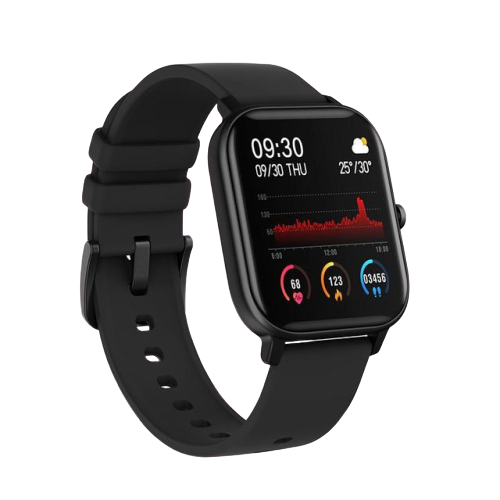

ATCWatch docs 
Contents:
Introduction
Hardware description
coding enviroment
BLE-OTA update description
ATCWatch docs
Docs
»
BLE-OTA update description
View page source
BLE-OTA update description
¶
for now there is only this here
.